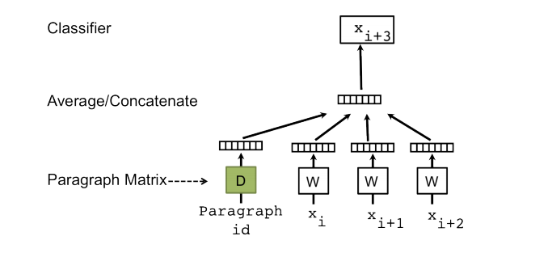

Doc2Vec(Document Embedding with Paragraph Vectors)은 Word2Vec에서 확장된 알고리즘입니다. Doc2Vec은 다량의 코퍼스를 문서 임베딩시에 훌륭한 성능을 보여줍니다. Word2VecDoc2Vec과 Word2Vec이 무엇이 다른지 다음 표로 정리했습니다.
| Word2Vec | Doc2Vec | |
|---|---|---|
| 년도 | 2013년 | 2015년 |
| 저자 | Tomas Mikolov 와 동료들 | Andrew M. Dai 와 동료들 |
| feature | word vector | word vecotr + paragraph vector |
| 주요 모델 | CBOW Skip Gram |
PV-DM model PV-DBOW |
Doc2Vec은 기존 Word2Vec모델을 확장하기 위해 paragraph vector를 제안했습니다. paragraph vector는 기존 word vector(window 사이즈내 단어 고려)에 paragraph matrix를 합한 벡터 입니다. 이러한 paragraph vector에 대한 모델이 PV-DM(Distributed Memory version of Paragraph Vector)입니다.

이때, word vector를 제외하고 paragraph vector만을 이용해 학습을 진행하는 모델을 PV-DBOW(Distributed Bag of Words version of Paragraph Vector)라고 제안합니다. 이 모델은 word vector(문맥 단어)를 고려하지 않고 paragraph vector만을 사용해 단어 예측을 수행합니다.
GenSim을 이용한 Doc2Vec
from gensim.test.utils import common_texts
from gensim.models.doc2vec import Doc2Vec, TaggedDocument
documents = [TaggedDocument(doc, [i]) for i, doc in enumerate(common_texts)]
model = Doc2Vec(documents, vector_size=5, window=2, min_count=1, workers=4)
inferred = model.infer_vector(["system", "response"])
sims = model.docvecs.most_similar([inferred])
print(sims)